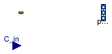

Package with base classes for Buildings.Fluid.Sources
Information
This package contains base classes that are used to construct the models in
Buildings.Fluid.Sources.
Extends from Modelica.Icons.BasesPackage (Icon for packages containing base classes).
Package Content
| Name |
Description |
| Outside
|
Boundary that takes weather data, and optionally trace substances, as an input |
Boundary that takes weather data, and optionally trace substances, as an input

Information
This is the base class for models that describes boundary conditions for
pressure, enthalpy, and species concentration that can be obtained
from weather data, and that may be modified based on the wind pressure.
If the parameter use_C_in is false (default option),
the C parameter
is used as the trace substance for flow that leaves the component, and the
C_in input connector is disabled; if use_C_in is true,
then the C parameter is ignored, and the value provided by the input connector is used instead.
Note that boundary temperature,
mass fractions and trace substances have only an effect if the mass flow
is from the boundary into the port. If mass is flowing from
the port into the boundary, the boundary definitions,
with exception of boundary pressure, do not have an effect.
Extends from Modelica.Fluid.Sources.BaseClasses.PartialSource (Partial component source with one fluid connector).
Parameters
| Type | Name | Default | Description |
|---|
| replaceable package Medium | PartialMedium | Medium model within the source |
| Boolean | use_C_in | false | Get the trace substances from the input connector |
| ExtraProperty | C[Medium.nC] | fill(0, Medium.nC) | Fixed values of trace substances |
Connectors
| Type | Name | Description |
|---|
| FluidPorts_b | ports[nPorts] | |
| input RealInput | C_in[Medium.nC] | Prescribed boundary trace substances |
| Bus | weaBus | Bus with weather data |
Modelica definition
partial model Outside
"Boundary that takes weather data, and optionally trace substances, as an input"
extends Modelica.Fluid.Sources.BaseClasses.PartialSource;
parameter Boolean use_C_in = false
"Get the trace substances from the input connector";
parameter Medium.ExtraProperty C[Medium.nC](
quantity=Medium.extraPropertiesNames)=
fill(0, Medium.nC)
"Fixed values of trace substances";
Modelica.Blocks.Interfaces.RealInput C_in[Medium.nC]
if use_C_in
"Prescribed boundary trace substances";
Buildings.BoundaryConditions.WeatherData.Bus weaBus
"Bus with weather data";
protected
final parameter Boolean singleSubstance = ( Medium.nX == 1)
"True if single substance medium";
Buildings.Utilities.Psychrometrics.X_pTphi x_pTphi
if
not singleSubstance
"Block to compute water vapor concentration";
Modelica.Blocks.Interfaces.RealInput X_in_internal[Medium.nX]
"Needed to connect to conditional connector";
Modelica.Blocks.Interfaces.RealInput T_in_internal
"Needed to connect to conditional connector";
Modelica.Blocks.Interfaces.RealInput p_in_internal
"Needed to connect to conditional connector";
Modelica.Blocks.Interfaces.RealInput C_in_internal[Medium.nC]
"Needed to connect to conditional connector";
equation
// Check medium properties
Modelica.Fluid.Utilities.checkBoundary(Medium.mediumName, Medium.substanceNames,
Medium.singleState, true, medium.X, "Boundary_pT");
// Conditional connectors for trace substances
connect(C_in, C_in_internal);
if not use_C_in
then
C_in_internal = C;
end if;
// Connections to input. This is required to obtain the data from
// the weather bus in case that the component x_pTphi is conditionally removed
connect(weaBus.TDryBul, T_in_internal);
// Connections to compute species concentration
connect(p_in_internal, x_pTphi.p_in);
connect(T_in_internal, x_pTphi.T);
connect(weaBus.relHum, x_pTphi.phi);
connect(X_in_internal, x_pTphi.X);
if singleSubstance
then
X_in_internal =
zeros(Medium.nX);
end if;
// Assign medium properties
medium.p = p_in_internal;
medium.T = T_in_internal;
medium.Xi = X_in_internal[1:Medium.nXi];
ports.C_outflow =
fill(C_in_internal, nPorts);
end Outside;
Automatically generated Mon Jul 13 14:26:08 2015.